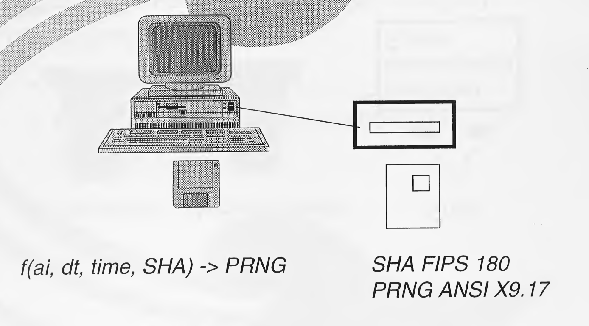
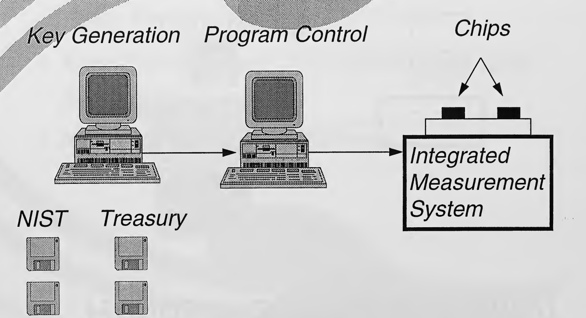

NIST IR 5468 日本語訳
英語タイトル : Report of the NIST Workshop on Key Escrow Encryption日本語タイトル : 鍵預託暗号に関する NIST ワークショップの報告書
公開日 : 1994-06-01
原文URL : https://csrc.nist.gov/pubs/ir/5468/final
原本 PDF : https://doi.org/10.6028/NIST.IR.5468
訳文 : 有志による非公式の日本語訳（AI による翻訳とレビュー）。全 421 段落のうち 406 段落を翻訳済み（原文取得日 : 2026-11-16）
[要約] NIST IR 5468 は、鍵預託暗号に関する NIST ワークショップの報告書で、1994 年 6 月に発行されました。背景として、国家情報基盤（NII）の構築には広範な暗号の利用が必要な一方、制約のない暗号の広範な利用は合法的な電子的監視を難しくするという問題意識が示され、NIST が NSA の開発した鍵預託暗号の技術に基づく鍵預託暗号化標準（EES）を発行し、鍵預託の技術を組み込んだ次世代の暗号技術を開発する共同研究コンソーシアムへの参加を産業界や学術界の関係者に呼びかけたことも述べられています。報告書は、現行の鍵預託暗号方式、鍵預託暗号の代替案、システムの完全性に関する要件、国際的な鍵預託暗号の提案目標といったセッションの要約を収めています。さらに、政府が提案した会合後の行動計画と、産業界の参加者による閉会時のコメントを、行動の節で示しています。
NISTIR 5468
NISTIR 5468
Report of the NIST Workshop on Key Escrow Encryption
鍵預託暗号に関する NIST ワークショップの報告書
Arthur E. Oldehoeft Department of Computer Science Iowa State University
Arthur E. Oldehoeft Department of Computer Science Iowa State University
Edited by
編集者
Dennis K. Branstad Computer Systems Laboratory
Dennis K. Branstad Computer Systems Laboratory
U.S. DEPARTMENT OF COMMERCE Technology Administration National Institute of Standards and Technology Gaithersburg, MD 20899
米国商務省 技術管理局 国立標準技術研究所（NIST） Gaithersburg, MD 20899
NISTIR 5468
NISTIR 5468
Report of the NIST Workshop on Key Escrow Encryption
鍵預託暗号に関する NIST ワークショップの報告書
Arthur E. Oldehoeft Department of Computer Science Iowa State University
Arthur E. Oldehoeft Department of Computer Science Iowa State University
Edited by
編集者
Dennis K. Branstad Computer Systems Laboratory
Dennis K. Branstad Computer Systems Laboratory
U.S. DEPARTMENT OF COMMERCE Technology Administration National Institute of Standards and Technology Gaithersburg, MD 20899
米国商務省 技術管理局 国立標準技術研究所（NIST） Gaithersburg, MD 20899
June 1994
1994 年 6 月
U.S. DEPARTMENT OF COMMERCE Ronald H. Brown, Secretary
米国商務省 Ronald H. Brown 長官
TECHNOLOGY ADMINISTRATION Mary L. Good, Under Secretary for Technology NATIONAL INSTITUTE OF STANDARDS AND TECHNOLOGY Arati Prabhakar, Director
技術管理局 Mary L. Good、技術担当次官 国立標準技術研究所（NIST） Arati Prabhakar 所長
Contents
目次
1 Introduction
1 はじめに
1.1 Background
1.1 背景
As the U.S. builds its National Information Infrastructure (NII), wide-spread use of encryption will be needed to protect sensitive information. However, wide-spread use of unconstrained encryption makes lawfully-authorized electronic surveillance difficult, if not impossible.
米国が国家情報基盤（NII）を構築するにつれて、機微な情報を保護するために暗号が広く使われる必要が生じます。しかし、制約のない暗号が広く使われると、法的に認められた電子的監視が、不可能ではないにせよ困難になります。
In attempting to balance the need for privacy and the need for lawful surveillance, a Key Escrow Encryption (KEE) technology was developed by the National Security Agency (NSA). The Escrowed Encryption Standard (EES) based on the KEE was issued by the National Institute of Standards and Technology (NIST). Approved by the Secretary of Commerce1, this voluntary standard seeks to satisfy the need for privacy while preserving the ability to perform lawfully authorized wiretaps. This escrowed encryption technology is embodied in an electronic chip containing the SKIPJACK algorithm for encryption of information and the technology for creating a Law Enforcement Access Field (LEAF) for use in many telecommunication applications. Both the SKIPJACK algorithm and the LEAF creation method are classified. The standard is intended to facilitate the acquisition of devices that implement KEE technologies by Federal government agencies. Its use is not mandated for Federal agencies, the private sector, or other levels of government.
プライバシーの必要性と合法的な監視の必要性の均衡を図るため、国家安全保障局（NSA）が鍵預託暗号（KEE）の技術を開発しました。KEE に基づく鍵預託暗号化標準（EES）は、国立標準技術研究所（NIST）が発行しました。この標準は商務長官が承認したもの1で、任意の標準であり、合法的に認められた盗聴を行う能力を保ちつつ、プライバシーの必要性を満たすことを目指しています。この預託暗号の技術は、情報を暗号化する SKIPJACK アルゴリズムと、多くの電気通信アプリケーションで使用する法執行機関アクセスフィールド（LEAF）を作成する技術を収めた電子チップに実装されています。SKIPJACK アルゴリズムと LEAF の作成方法は、いずれも機密扱いです。この標準は、連邦政府機関による KEE 技術を実装した装置の調達を容易にすることを意図しています。連邦機関、民間部門、その他の政府レベルに対して、その使用は義務付けられていません。
In using the Escrowed Encryption Standard, communications are encrypted by the SKIPJACK algorithm using a session key agreed upon by the participating entities. The appended LEAF field, which contains among other things the session key (encrypted using the device unique key), is itself encrypted with an 80-bit family key. The only known way of recovering the session key is to first recover the two 80-bit components of the device unique key. Each of these components is “escrowed” (i.e., filed) in encrypted form with one of two escrow agents. The two escrow agents act under strict procedures that will ensure security of the key components and govern their release. Surveillance requires acquisition of both escrowed key components, through a predefined process.
鍵預託暗号化標準を使用する場合、通信は、参加するエンティティが合意したセッション鍵を用いて SKIPJACK アルゴリズムにより暗号化されます。付加される LEAF フィールドには、とりわけセッション鍵（装置固有鍵で暗号化されたもの）が含まれ、LEAF フィールド自体は 80 ビットのファミリー鍵で暗号化されます。セッション鍵を回復する既知の方法は、まず装置固有鍵の 2 つの 80 ビット構成要素を回復する方法だけです。これらの構成要素はそれぞれ、暗号化された形で 2 つの預託機関のそれぞれに「預託」（すなわち保管）されます。2 つの預託機関は、鍵の構成要素の安全性を保証し、その開示を管理する厳格な手続に従って行動します。監視を行うには、あらかじめ定められた手続を通じて、預託された 2 つの鍵の構成要素の両方を入手する必要があります。
Based on the desire to use existing expertise in the private sector and motivated partially by requirements of non-government entities, NIST has invited interested industry and academic partners to join a cooperative research consortium for developing the next generation of encryption technology that contains integrated cryptographic key escrowing techniques. In addition, an informal industry/government working group was established to explore the possibilities of software implementation of key escrowing. Finally, representatives from key U.S. industries were invited to participate in this workshop in order to initiate a dialogue on the issues of escrowing encryption keys. This partnership with the private sector is necessary to arrive at a mutually acceptable solution that will balance the need for privacy, the need for lawful electronic surveillance, and the needs of industry, both as users and vendors.
NIST は、民間部門の既存の専門知識を活用したいという考えと、非政府エンティティの要件にも一部動機づけられて、関心のある産業界および学界のパートナーに対し、暗号鍵の預託技術を統合した次世代の暗号技術を開発する共同研究コンソーシアムへの参加を呼びかけました。さらに、鍵預託のソフトウェア実装の可能性を探るため、産業界と政府の非公式の作業部会が設けられました。最後に、暗号鍵の預託に関する問題について対話を始めるため、米国の主要産業の代表者が、このワークショップに参加するよう招かれました。このような民間部門との連携は、プライバシーの必要性、合法的な電子的監視の必要性、そして利用者としても供給者としても産業界のニーズの均衡をとる、相互に受け入れ可能な解決策に至るために必要です。
1.2 Participants
1.2 参加者
[Excerpt from 出席者名簿・連絡先（個人情報）, © 各個人（個人情報のため） — not reproduced on this unofficial site]
［出席者名簿・連絡先（個人情報） からの引用。第三者（各個人（個人情報のため））の著作物のため、この非公式サイトには掲載していません。原本 PDF を参照してください。］
1.3 Agenda
1.3 議事次第
NIST Lecture Room B, Friday, June 10, 1994
NIST Lecture Room B、1994 年 6 月 10 日（金）
Opening Session
開会セッション
| 8:45 | Registration (Outside Lecture Room B) |
| 9:00 | Welcome: Raymond G. Kammer, Deputy Director, NIST |
| 9:05 | Workshop Overview and Participant Introductions: F. Lynn McNulty, CSL, NIST |
| 9:15 | Objectives of Key Escrow Encryption: Lionel S. “Skip” Johns, OSTP |
| 9:40 | NSA Perspectives: William P. Crowell, Deputy Director, NSA and Edward A. Hart, Deputy Director for Information Systems Security, NSA |
| 8:45 | 受付（Lecture Room B の外） |
| 9:00 | 歓迎の辞: Raymond G. Kammer、Deputy Director、NIST |
| 9:05 | ワークショップの概要と参加者の紹介: F. Lynn McNulty、CSL、NIST |
| 9:15 | 鍵預託暗号の目的: Lionel S. “Skip” Johns、OSTP |
| 9:40 | NSA の見解: William P. Crowell、Deputy Director、NSA および Edward A. Hart、Deputy Director for Information Systems Security、NSA |
Current Key Escrow Encryption Method
現行の鍵預託暗号方式
| 10:00 | Current “CLIPPER” Key Escrowing Method: Miles Smid, NIST |
| 10:25 | Industry Perspectives: (Position Papers, Participants) |
| 10:00 | 現行の “CLIPPER” 鍵預託方式: Miles Smid、NIST |
| 10:25 | 産業界の見解:（意見書、参加者） |
Key Escrow Encryption Alternative #1
鍵預託暗号の代替案 #1
| 11:00 | Coordinator: Don Cole, Racal-Guardata, Inc. Software Key Escrowing Proposal: Stephen Walker and David Balenson, Trusted Information Systems |
| 11:30 | Lunch |
| 11:00 | コーディネーター: Don Cole、Racal-Guardata, Inc. ソフトウェアによる鍵預託の提案: Stephen Walker および David Balenson、Trusted Information Systems |
| 11:30 | 昼食 |
Key Escrow Encryption Alternative #2
鍵預託暗号の代替案 #2
| 12:30 | Coordinator: Jimmy Upton, Uptronics Multi-Purpose Key Escrowing Methods: Silvio Micali, MIT Private Escrow Key Management: Jon Roberts, TECSEC Industry Responses, Suggestions: Participants |
| 2:00 | Break |
| 12:30 | コーディネーター: Jimmy Upton、Uptronics Multi-Purpose Key Escrowing Methods: Silvio Micali、MIT Private Escrow Key Management: Jon Roberts、TECSEC 産業界の反応と提案: 参加者 |
| 2:00 | 休憩 |
System Integrity Requiremennts
システムの完全性に関する要件
| 2:30 | Coordinator: James Dray, NIST Criteria for High Integrity Software: Jim Arney, NSA System Requirements for Software Integrity: Stephen Walker, Trusted Information Systems Industry Suggestions: Participants |
| 2:30 | コーディネーター: James Dray、NIST Criteria for High Integrity Software: Jim Arney、NSA System Requirements for Software Integrity: Stephen Walker、Trusted Information Systems 産業界の提案: 参加者 |
International Aspects of Key Escrowing
鍵預託の国際的側面
| 3:45 | International Aspects of Key Escrowing: Dorothy Denning, Georgetown University Industry Suggestions: Participants |
| 3:45 | 鍵預託の国際的側面: Dorothy Denning、Georgetown University 産業界の提案: 参加者 |
Summary and Future Directions
要約と今後の方向性
| 4:15 | Summary/Future Directions: F. Lynn McNulty (Discussion) |
| 4:45 | Adjourn |
| 4:15 | 要約と今後の方向性: F. Lynn McNulty（討議） |
| 4:45 | 閉会 |
2 Session Summaries
2 セッションの要約
2.1 Session 1: Opening Session
2.1 セッション 1: 開会セッション
Senior government officials discussed the objectives of the workshop in light of the key escrow encryption initiative announced in April, 1993. This initiative seeks to provide good encryption-based security to a number of information processing environments while preserving the lawful interests of law enforcement and national security. The Escrowed Encryption Standard (EES), announced as Federal Information Processing Standard 185 on February 4, 1994, resulted from this initiative. In addition, the “CLIPPER” escrowed encryption device was designed and built under this initiative. Finally, a Key Escrow System is being designed and implemented to store the escrowed keys securely and make them available to authorized entities for legally authorized electronic surveillance.
政府の高官が、1993 年 4 月に発表された鍵預託暗号の構想を踏まえて、ワークショップの目的を論じました。この構想は、法執行と国家安全保障という正当な利益を保ちつつ、多くの情報処理環境に暗号に基づく優れたセキュリティを提供することを目指しています。1994 年 2 月 4 日に連邦情報処理標準 185 として発表された鍵預託暗号化標準（EES）は、この構想から生まれました。さらに、この構想の下で、“CLIPPER” 預託暗号装置が設計・製造されました。最後に、預託された鍵を安全に保管し、法的に認められた電子的監視のために、権限のあるエンティティが利用できるようにする鍵預託システムが、設計・実装されつつあります。
Raymond G. Kammer, Deputy Director of NIST, and F. Lynn McNulty, Associate Director for Computer Security at NIST, provided the welcoming and introductory remarks. (Mr. McNulty also served as moderator for the workshop.) Mssrs. Kammer and McNulty stated that the objective of the workshop was to engage the private sector in dialogue on the issues of key escrow encryption.
NIST の Deputy Director である Raymond G. Kammer と、NIST のコンピューターセキュリティ担当の Associate Director である F. Lynn McNulty が、歓迎の辞と冒頭の挨拶を述べました。（McNulty 氏はワークショップの司会も務めました。）Kammer 氏と McNulty 氏は、ワークショップの目的は、鍵預託暗号の問題について民間部門との対話に取り組むことだと述べました。
Lionel “Skip” Johns, Associate Director of Technology, Office of Science and Technology Policy, Executive Office of the President, stated that the National Security Council has the responsibility of coordinating security policy in the Executive Branch of the U.S. Government. Intelligence remains a critical activity of national interest and the U.S. must be able to detect and act in a timely manner on real threats of terrorism, crime, and danger to the national security. OSTP seeks to engage in dialogue with U.S. industry so that effective intelligence collection can be conducted with a minimal threat to privacy. He stated that acceptable solutions may be hard to find and, unfortunately, a final solution may be suboptimal.
大統領府の科学技術政策局（OSTP）で技術担当の Associate Director を務める Lionel “Skip” Johns 氏は、国家安全保障会議が、米国政府の行政部門における安全保障政策の調整に責任を負っていると述べました。情報活動は引き続き国益にとって重要な活動であり、米国は、テロ、犯罪、国家安全保障への危険という現実の脅威を探知し、時宜を得て対処できなければならないとしました。OSTP は、プライバシーへの脅威を最小限にとどめながら効果的な情報収集を行えるよう、米国の産業界との対話に取り組むことを目指しています。同氏は、受け入れ可能な解決策を見つけるのは難しい場合があり、残念ながら、最終的な解決策が最適ではないものになる可能性もあると述べました。
William Crowell, Deputy Director of the National Security Agency, pointed out the need to ensure that a balance is achieved among four equities: privacy, public safety, ability to market new products, and national security. Three options, when implementing cryptography, are possible: flawed cryptography, strong cryptography with contents unreadable by all, and key escrowing. The latter seemed to have the most viability for achieving balance among the four equities. CLIPPER is a first (interim) solution – there is a need to look at more software intensive solutions. Edward Hart, Deputy Director for Information Systems Security, NSA, reiterated NSA’s desire for openness, collegiality, and desire to work with U.S. industry in seeking mutually acceptable solutions.
国家安全保障局の Deputy Director である William Crowell 氏は、プライバシー、公共の安全、新製品を市場に出す能力、国家安全保障という 4 つの利益の間で均衡を確保する必要があると指摘しました。暗号を実装する際に取りうる選択肢は、欠陥のある暗号、内容が誰にも読めない強力な暗号、鍵預託の 3 つです。最後の鍵預託が、4 つの利益の均衡をとるうえで最も実現性が高いように見えました。CLIPPER は最初の（暫定的な）解決策であり、よりソフトウェア中心の解決策を検討する必要があるとしました。NSA の Deputy Director for Information Systems Security である Edward Hart 氏は、NSA が開かれた姿勢と協調性を望んでおり、相互に受け入れ可能な解決策を探る上で米国の産業界と協力したいと考えていることを改めて述べました。
Industry participants, in an open discussion, raised the following issues/questions/concerns:
産業界の参加者は、自由討議の中で、次の問題・疑問・懸念を提起しました。
1.Currently the delay in obtaining licenses to export products prevents U.S. industry from being internationally competitive.
1.現在、製品の輸出許可の取得に遅れが生じており、そのために米国の産業界が国際的な競争力を持てずにいます。
2.The uncertainty over whether a license will be granted discourages even applying for a license. There needs to be more information as to what applications have been made and their disposition. A counter-point is the need for nondisclosure of export license applications that might compromise the economic interests of the applicants or compromise the interests of national security.
2.許可が下りるかどうかが不確実なため、申請すること自体が敬遠されています。どのような申請が行われ、どう処理されたかについて、より多くの情報が必要です。これに対する反論として、申請者の経済的利益を損なうおそれのある、あるいは国家安全保障上の利益を損なうおそれのある輸出許可申請について、非公開にする必要があるという点が挙げられました。
3.Given the four equities, how are we planning for change? It is important that we not be constrained in meeting future needs.
3.4 つの利益を前提とした場合、変化にどう備えるのか。将来のニーズに応える上で制約を受けないことが重要です。
4.If the CLIPPER Chip is only an interim solution, why not wait for a final solution? The response was that key escrowing is an integral part of current cryptography policy and will be so through all stages of evolution.
4.CLIPPER Chip が暫定的な解決策にすぎないのなら、なぜ最終的な解決策を待たないのか。これに対し、鍵預託は現行の暗号政策の不可欠な一部であり、今後の進展のどの段階でもそうあり続けるとの回答がありました。
5.Foreign countries have proprietary encryption algorithms that they want to put into chips. What restrictions apply on manufacturing the chips in the U.S.? Is an open dialogue with NSA possible on this? NSA stated that they supported the capitalistic free enterprise system and invited dialogue with industry on the issues as how the current regulating processes might be changed.
5.外国には、チップに組み込みたい独自の暗号アルゴリズムがあります。米国内でそのチップを製造することには、どのような制限が適用されるのか。この点について NSA と率直に対話することは可能か。NSA は、資本主義的な自由企業体制を支持していると述べ、現行の規制の手続をどのように変更しうるかという問題について、産業界との対話を歓迎しました。
6.It was noted that security of information is an international issue and is not a new issue.
6.情報のセキュリティは国際的な問題であり、新しい問題ではないという指摘がありました。
7.There is a need for NSA to have a dialogue with industry and academia to define new processes to meet the requirements of global information security. The primary concern for industry is satisfying the security needs of their commercial customers. The response was that a process has to be developed, amenable to all interests.
7.NSA は、地球規模の情報セキュリティの要件を満たす新しい手続を定義するため、産業界および学界と対話する必要があります。産業界にとっての主な関心事は、商用の顧客のセキュリティ上のニーズを満たすことです。これに対し、あらゆる利害関係者が受け入れられる手続を作る必要があるとの回答がありました。
8.Concern was expressed for the feeling that, when industry raises an export problem with NSA, industry representatives have their integrity questioned. NSA needs to be more responsive and less critical of intent.
8.産業界が輸出の問題を NSA に提起すると、産業界の代表者が自分たちの誠実さを疑われているように感じるという懸念が示されました。NSA は、より迅速に対応し、意図をむやみに批判しないようにする必要があります。
9.Concern was expressed that there may not be a satisfactory solution to balance the four equities.
9.4 つの利益の均衡をとる満足のいく解決策がない可能性があるという懸念が示されました。
10.With regard to the import/export of cryptography, individuals in foreign countries want to use their own algorithms – they do not trust ours. At present, we are unable to export the technology they want. The response was for industry to provide the technology to NSA for their approval for export.
10.暗号の輸入・輸出に関して、外国の個人は自国のアルゴリズムを使いたがっています。米国のものは信用されていません。現時点では、彼らが望む技術を輸出することはできません。これに対し、産業界がその技術を NSA に提供し、輸出の承認を求めるべきだとの回答がありました。
It was further noted that foreign countries sell DES products to the U.S. but the U.S. cannot sell U.S. products containing DES to them. For example, DES can be purchased in such places as Moscow, Singapore, and Stockholm. Kerberos, with any encryption technique, is available outside the U.S. but U.S. industry is not allowed to export it. U.S. companies are unable to compete for the global market for cryptographic devices and, from the standpoint of technology and economics, are falling behind (or losing ground to) other nations.
さらに、外国は DES 製品を米国に販売しているのに、米国は DES を含む米国製品をそれらの国に販売できないことが指摘されました。たとえば、DES はモスクワ、シンガポール、ストックホルムなどで購入できます。Kerberos は、どの暗号技術を用いるものも米国外で入手できますが、米国の産業界はそれを輸出することを認められていません。米国企業は、暗号装置の世界市場で競争することができず、技術と経済の観点から、他国に後れをとりつつあります（あるいは他国に押されている）。
11.Concern was expressed for the the fact that U.S. processes dealing with import/export are too far behind to be effective – DES was cited again as an example. For international competitiveness, the U.S. needs to not only speed up the process, they must be able to be ahead of the curve in determining what new processes will be needed.
11.輸入・輸出を扱う米国の手続が実効性を発揮できないほど大きく後れているという事実への懸念が示され、ここでも DES が例として挙げられました。国際競争力のためには、米国は手続を迅速化するだけでなく、どのような新しい手続が必要になるかを見極める上で、先を行くことができなければなりません。
12.NSA was encouraged to form a task force on the exportation of cryptography to technology in order react quickly to the market demands for solutions – there is a need to establish this task force this fiscal year. NSA must meet industry somewhere within the 60%-40% compromise lines.
12.NSA は、市場が求める解決策に迅速に対応するため、暗号技術の技術への輸出に関するタスクフォースを設置するよう促されました。このタスクフォースは今会計年度中に設置する必要があります。NSA は、60%対40%の妥協線の範囲内のどこかで産業界と折り合いをつけなければなりません。
13.With regard to the four equities, it was noted that not everyone understands them in the same way. There is a need for more solid information about what the problems are and what is required to solve them.
13.4 つの利益について、全員が同じように理解しているわけではないことが指摘されました。問題が何であり、それを解決するために何が必要かについて、より確かな情報が必要です。
2.2 Session 2: Current Key Escrow Encryption Method
2.2 セッション 2: 現行の鍵預託暗号方式
This session summarized the current key escrowing system designed to work with EES devices such as CLIPPER. Industry representatives were given the opportunity to present their positions.
このセッションでは、CLIPPER などの EES 装置と連携するよう設計された現行の鍵預託システムを要約しました。産業界の代表者には、自らの立場を述べる機会が与えられました。
2.2.1 Current “CLIPPER Chip Key Escrowing System”, Miles Smid, Key Escrow System Program Manager, NIST
2.2.1 現行の “CLIPPER Chip Key Escrowing System”、Miles Smid、Key Escrow System Program Manager、NIST
Intensive work on the key escrowing system began with the April 16, 1993 announcement of the KEE Initiative. NIST appointed a program manager in August. In addition to NIST, other participating agencies are the Department of Justice, the FBI, the Department of Treasury, and the NSA.
鍵預託システムに関する集中的な作業は、1993 年 4 月 16 日の KEE 構想の発表とともに始まりました。NIST は 8 月にプログラムマネージャーを任命しました。NIST のほかに参加している機関は、司法省、FBI、財務省、NSA です。
View graphs were shown describing how the KEE system is designed to work: manufacturing of the chip, programming of the the chip, key escrowing with two independent government agents (NIST, Department of Treasury), obtaining court authorization for a wire tap and the corresponding release of keys, and decryption of communications.
KEE システムがどのように動作するよう設計されているかを説明するビューグラフが示されました。内容は、チップの製造、チップのプログラミング、2 つの独立した政府機関（NIST、財務省）による鍵預託、盗聴の裁判所による許可の取得とそれに伴う鍵の開示、通信の復号です。
Four phases of key escrowing have been defined. The first phase, consisting of developing a prototype system, has been completed. The first programming of a chip took place in October, 1993 and by March, 1994, the keys for 17,000 CLIPPER chips had been escrowed. At present, no key components have been released. Phases 2-4 are designed to move from the prototype system to a target production system. The target system will include automated procedures for handling and storing escrow components, a decryption processor, a simple key component extraction system, an escrow agent workstation, and a transition to life cycle support. A number of evaluations are planned during phases 2-4. Recent efforts have included preparing for key escrowing for CAPSTONE. Also, the Vice-President has asked for a review of other possible escrow agents.
鍵預託システムには 4 つのフェーズが定められています。試作システムの開発から成る第 1 フェーズは完了しています。チップの最初のプログラミングは 1993 年 10 月に行われ、1994 年 3 月までに 17,000 個の CLIPPER チップの鍵が預託されました。現時点では、鍵の構成要素は一つも開示されていません。フェーズ 2〜4 は、試作システムから目標とする本番システムへ移行するよう設計されています。目標システムには、預託された構成要素を取り扱い保管するための自動化された手続、復号プロセッサー、簡素な鍵構成要素の抽出システム、預託機関のワークステーション、ライフサイクル支援への移行が含まれます。フェーズ 2〜4 では、いくつかの評価が計画されています。最近の取り組みには、CAPSTONE の鍵預託の準備が含まれます。また、副大統領は、ほかに預託機関となりうる機関の検討を求めました。
In discussion, several questions were raised:
討議では、いくつかの質問が出されました。
Q1. How does a foreign law enforcement agency get the ability to lawfully decrypt?
Q1. 外国の法執行機関は、どのようにして合法的に復号する能力を得るのか。
Discussions on this issue are currently underway.
この問題に関する協議が現在行われています。
Q2. Will KEE technology be exportable to foreign countries for their use or will it be restricted to Americans for individual use overseas?
Q2. KEE 技術は、外国が自国で使用するために輸出可能になるのか、それとも海外にいる米国人の個人使用に限られるのか。
Encryption devices can be carried out of the U.S. temporarily for personal use without a Hcense. KEE devices may be exported to most end users after an initial review and will qualify for special licensing2.
暗号装置は、個人使用であれば、許可なく一時的に米国外へ持ち出すことができます。KEE 装置は、最初の審査を経て大部分のエンドユーザーに輸出できる場合があり、特別許可の対象となります2。
Q3. For decryption, does one have to know in advance what the chip ID is?
Q3. 復号するには、チップ ID を事前に知っている必要があるのか。
No, the chip ID is in the LEAF.
いいえ、チップ ID は LEAF に含まれています。
Q4. Will the escrow agencies need a presence at the programming facility during phase 4?
Q4. フェーズ 4 で、預託機関はプログラミング施設に立ち会う必要があるのか。
At this point, we do not know if sufficient assurance will allow for a non-presence.
現時点では、十分な保証があれば立ち会わなくてよいのかどうかはわかっていません。
Q5. What are the consequences of a non-accredited key escrow system?
Q5. 認定されていない鍵預託システムの影響は何ですか。
Key components will not be released until accredited.
認定されるまで、鍵の構成要素は開示されません。
Q6. In production lots of 10,000, present cost estimates are $15 for a CLIPPER Chip and $90 for the CAPSTONE. These costs may be prohibitive. Will they be reduced?
Q6. 10,000 個のロットで生産した場合、現時点の費用見積もりは、CLIPPER Chip が 15 ドル、CAPSTONE が 90 ドルです。これらの費用は高すぎて手が出ないおそれがあります。引き下げられますか。
Efforts are underway to reduce costs.
費用を削減する取り組みが進められています。
2.2.2 Industry Perspectives
2.2.2 産業界の見解
The written position statement of several industries and the technical papers of some presenters appear in Appendix A. The following are brief position statements verbally offered by various industry representatives.
複数の業界による書面の意見表明と、一部の発表者の技術論文は、付録 A に掲載しています。以下は、各業界の代表者が口頭で述べた短い意見表明です。
1.AT&T
1.AT&T
We are currently selling equipment with an optional built-in CLIPPER chip. It is important to move forward with reasonable solutions. Our current sales are mostly to the government and to a lesser extent to commercial customers. The prices of both CLIPPER and CAPSTONE are of great importance.
当社は現在、CLIPPER チップを内蔵するオプションを備えた装置を販売しています。合理的な解決策を前へ進めることが重要です。現在の販売先は主に政府で、商用の顧客にはそれほど販売していません。CLIPPER と CAPSTONE の価格は、どちらも非常に重要です。
2.Compaq:
2.Compaq:
We need to compete with competitors in the foreign marketplaces. Economic espionage is a major concern. We would like to use CLIPPER, but we need to know the import/export restrictions. The preliminary cost figures are too high. We have no position at the moment on key escrowing issues.
当社は、海外市場で競合他社と競争する必要があります。経済スパイ活動は大きな懸念です。当社は CLIPPER を使いたいのですが、輸入・輸出の制限を知る必要があります。暫定的な費用の数字は高すぎます。鍵預託の問題については、現時点で当社の立場はありません。
3.Computer Associates
3.Computer Associates
We are a large software vendor with a large foreign and domestic customer base. We deal with multiple platforms which causes some problems. We do not want to depend on hardware manufacturers for encryption; we are more interested in software encryption. Encryption standards are needed, but they must be wanted by the customers. We need to be able to export our products.
当社は、国内外に多くの顧客を抱える大手のソフトウェアベンダーです。複数のプラットフォームを扱っており、そのことが問題を生んでいます。当社は、暗号をハードウェアメーカーに頼りたくなく、ソフトウェアによる暗号の方に関心があります。暗号の標準は必要ですが、顧客が望むものでなければなりません。当社は、製品を輸出できなければなりません。
4.DEC
4.DEC
What we sell depends on what the customers want and what the government will allow. We are apprehensive about key escrowing.
当社が販売するものは、顧客が望むことと、政府が認めることによって決まります。当社は鍵預託に懸念を抱いています。
5.Fisher International
5.Fisher International
We have been doing software key escrowing for a decade for use on portable computers and PCs. We developed the system, including sharing of keys, because customers have a fear of encryption and losing their encryption key.
当社は 10 年間、携帯型コンピューターと PC 向けにソフトウェアによる鍵預託を行ってきました。顧客が暗号化や暗号鍵の紛失を恐れているため、鍵の共有を含むシステムを開発しました。
6.Hewlett-Packard
6.Hewlett-Packard
A slide was shown depicting sales world-wide – government vs. commercial and foreign vs. domestic. The commercial sector tends to be leery of government solutions. (Some of HP’s work was described during the time allotted in Session 5 for industry participants.)
政府向けと商用向け、海外と国内に分けた世界全体の売上を示すスライドが示されました。商用部門は、政府による解決策に警戒を示す傾向があります。（HP の取り組みの一部は、セッション 5 で産業界の参加者に割り当てられた時間に説明されました。）
7.IBM
7.IBM
U.S. manufacturers enjoy significant foreign sales. The National Information Infrastructure will “not” be national; it will be global. It needs to be secured and therefore security is a global issue. In government/industry dialogue, it is necessary to talk about industry requirements and objectives, not just get industry perspectives.
米国の製造業者は、海外で大きな売上を得ています。国家情報基盤は「国内」のものにとどまらず、地球規模のものになります。それを保護する必要があり、したがってセキュリティは地球規模の問題です。政府と産業界の対話では、産業界の見解を聞くだけでなく、産業界の要件と目的について話し合うことが必要です。
8.Tandem/Atalla
8.Tandem/Atalla
The commercial banking industry will not accept government control of key escrowing. Commercial needs have to be evaluated and solutions must work across multiple platforms. Implementations on various platforms requires hybrid hardware/software solutions.
商業銀行業界は、鍵預託を政府が管理することを受け入れません。商用のニーズを評価する必要があり、解決策は複数のプラットフォームにまたがって動作しなければなりません。さまざまなプラットフォームで実装するには、ハードウェアとソフトウェアを組み合わせた解決策が必要です。
9.WordPerfect
9.WordPerfect
We are a software company and need a software implementation. If current system becomes a standard, the software will have to interface with the hardware. If the algorithms are a closely guarded secret, software implementation becomes a problem.
当社はソフトウェア会社であり、ソフトウェアでの実装が必要です。現行のシステムが標準になる場合、ソフトウェアはハードウェアとインターフェースをとる必要があります。アルゴリズムが厳重に秘匿されていると、ソフトウェアでの実装が問題になります。
10.Uptronics
10.Uptronics
We are a service organization. We need a healthy growing business in cryptography. The issues need to be resolved.
当社はサービス組織です。暗号の分野では、健全に成長する事業が必要です。これらの問題を解決する必要があります。
11.Motorola
11.Motorola
Cellular phone conversations are clear at the switch and therefore do not need key escrow to allow for law enforcement. Most customers expect security at no additional cost. Encryption algorithms should be available to all manufacturers worldwide. Manufacturers need to be able to implement the encryption algorithms in their own processes; the method for doing the key escrow needs to be simplified; standards have to be defined. The current direction in using smart cards for authentication do not match concepts for key escrowing.
携帯電話の通話は交換機で平文になるため、法執行を可能にするための鍵預託は必要ありません。ほとんどの顧客は、追加費用なしでセキュリティが得られることを期待しています。暗号アルゴリズムは、世界中のすべての製造業者が利用できるようにすべきです。製造業者は、自社の工程に暗号アルゴリズムを実装できなければなりません。鍵預託を行う方法は簡素化する必要があり、標準を定義しなければなりません。認証にスマートカードを使うという現在の方向性は、鍵預託の概念と合致しません。
12.Novell
12.Novell
We are a software vendor with an international market across a lot of different platforms. An algorithm in hardware requires a software interface. Business has to be built on wide-spread international adoption; one cannot afford to uniquely tailor a product for a specific environment. Export is of significant concern; controls have an increasingly adverse impact on competitiveness. In the key escrow process, who will be the alternate key escrow agents (government only, U.S. only)? How will the integrity of the programming process be ensured? Why should the customer trust it? Is there publicly available information on the certification process?
当社は、数多くのさまざまなプラットフォームにまたがる国際市場を持つソフトウェアベンダーです。ハードウェアに組み込まれたアルゴリズムには、ソフトウェアのインターフェースが必要です。事業は、国際的に広く採用されることを土台に築く必要があり、特定の環境のためだけに製品を作り込む余裕はありません。輸出は大きな懸念事項であり、規制が競争力に及ぼす悪影響は強まっています。鍵預託の過程で、代替の預託機関となるのは誰ですか（政府のみか、米国のみか）。プログラミング過程の完全性はどのように保証されるのですか。顧客にとって、それを信頼すべき理由は何ですか。認証の手続きについて、一般に公開された情報はありますか。
13.Oracle
13.Oracle
We are a large software vendor on hundreds of platforms in heterogeneous environments. Software solutions are important for interoperability; it would help such things as installability and cost. Standards are needed for exportability. The four equities listed by NSA are too narrow; they must take into account the international aspects of things. We would like DES plus a key exchange standard.
当社は、異種混在の環境にある数百のプラットフォームを扱う大手のソフトウェアベンダーです。ソフトウェアによる解決策は相互運用性にとって重要です。それはインストールのしやすさや費用といった面でも役立ちます。輸出可能にするには標準が必要です。NSA が挙げた 4 つの利害は範囲が狭すぎます。物事の国際的な側面を考慮に入れなければなりません。当社は DES に加えて、鍵交換の標準を望んでいます。
14.SPYRUS
14.SPYRUS
We are a small security products company. Our customer base is divided into groups of “do not care”, “no way”, and “yes, we want escrow”. There are three applications: message (e.g., email), streams or circuit encryption, and packet encryption. In the latter, there is concern that the overhead of the LEAF is larger than the packet. There is a need to design cryptography systems with “holes” to allow teaming with other entities who can fill the “holes” with appropriate encryption algorithms.
当社は小規模なセキュリティ製品の会社です。当社の顧客層は、「気にしない」、「とんでもない」、「預託を望む」の 3 つのグループに分かれます。用途は、メッセージ（電子メールなど）、ストリームまたは回線の暗号化、パケットの暗号化の 3 つです。パケットの暗号化では、LEAF のオーバーヘッドがパケット自体より大きくなるという懸念があります。他の組織と連携して適切な暗号アルゴリズムで「穴」を埋められるよう、「穴」のある暗号システムを設計する必要があります。
15.Sun Microsystems
15.Sun Microsystems
More than half of our business is outside the U.S. We are mostly concerned with software solutions, albeit we build hardware. There is concern about government controlled encryption, there is worry about customer acceptance.
当社の事業の半分以上は米国外です。当社はハードウェアも製造していますが、主な関心はソフトウェアによる解決策にあります。政府が管理する暗号には懸念があり、顧客に受け入れられるかどうかも心配です。
16.Semaphore
16.Semaphore
We are on record as being in favor of key escrow as a technology. We need a corporate entity to be a key escrow agent – large banks want this. A range of vendors is needed to build chip solutions – to allow integration of SKIPJACK. Internationalization has other twists with impact on global economies. Consider a U.S.-based company with U.S. equipment which is purchased by a foreign-based company. If the equipment is not exportable, does it have to be returned?
当社は、鍵預託を技術として支持していることを公言しています。鍵預託機関となる企業体が必要であり、大手銀行がこれを望んでいます。SKIPJACK を組み込めるようにするため、チップによる解決策を作る幅広いベンダーが必要です。国際化には、世界経済に影響を及ぼす別の面もあります。米国に拠点を置く企業の米国製の装置を、外国に拠点を置く企業が購入する場合を考えてください。その装置が輸出できないとき、返却しなければならないのでしょうか。
17.TECSEC
17.TECSEC
See the presentation in Section 2.4.
第 2.4 節の発表を参照してください。
18.TIS
18.TIS
Key escrowing like wire-tapping can encroach on personal privacy. Americans will not accept the concepts unless Congress passes the necessary laws. See the presentations in Section 2.3 and 2.5 for other comments.
鍵預託は、盗聴と同様に、個人のプライバシーを侵害するおそれがあります。議会が必要な法律を成立させない限り、米国民はこの考え方を受け入れないでしょう。その他の意見については、第 2.3 節および第 2.5 節の発表を参照してください。
2.3 Session 3: Key Escrow Encryption Alternative #1
2.3 セッション 3: 鍵預託暗号の代替案 #1
Session Coordinator: Don Cole, Chief Scientist, Racal-Guardata, Inc.
セッションコーディネーター: Don Cole、Chief Scientist、Racal-Guardata, Inc.
NIST has published announcements seeking Cooperative Research and Development Agreements (CRADAs) with organizations having the capability and interest in developing alternative key escrow encryption methods, especially in software but also in hardware. As a result, several organizations are participating in a Key Escrow Encryption Working Group seeking to specify requirements and acceptability criteria for key escrow encryption systems and then to design and/or evaluate candidate systems.
NIST は、鍵預託暗号の代替方式を、特にソフトウェアで、ハードウェアでも開発する能力と関心を持つ組織との共同研究開発協定（CRADA）を求める告知を公表しました。その結果、複数の組織が鍵預託暗号作業部会に参加しており、鍵預託暗号システムの要件と受け入れ基準を定め、その上で候補システムを設計または評価することを目指しています。
2.3.1 A Software Key Escrow Approach, Stephen T. Walker (Member of Working Group) and David M. Balenson, Trusted Information Systems, Inc.
2.3.1 ソフトウェアによる鍵預託の方式、Stephen T. Walker（作業部会メンバー）および David M. Balenson、Trusted Information Systems, Inc.
A working group consisting of four non-government individuals (Cole, Denning, Upton, Walker) and two government agency individuals (Arney, Branstad) have been exploring ways to perform key escrow encryption in software. The motivation is to develop a broadly acceptable, low-cost system that achieves the objectives of law enforcement. It does not solve problems that CLIPPER/CAPSTONE do not solve as both can be defeated by a determined software hacker.
非政府の 4 名（Cole、Denning、Upton、Walker）と政府機関の 2 名（Arney、Branstad）からなる作業部会が、ソフトウェアで鍵預託暗号を行う方法を探ってきました。その動機は、法執行の目的を達成する、広く受け入れられる低コストのシステムを開発することです。このシステムも、CLIPPER/CAPSTONE と同様、決意の固いソフトウェアハッカーに破られる可能性があります。
Many aspects of the design and usage are similar to the specifications in the EES. Rather than secret key cryptography, the proposed model uses public key cryptography and will work with any public key algorithm although software implementations cannot keep the algorithm secret. It will work with PCM cards. Components of a private key are escrowed with two independent escrow agents. Each instance of the software is a shrink-wrapped package, with a unique ID assigned to it either at the time of creation or the time of first invocation, and with embedded cryptographic checksums to guard against code modification. This ID is provided in a LEAF which is created by the software when invoked. The method of escrowing keys and their authorized retrieval by law enforcement agencies was outlined.
設計と利用の多くの面は、EES の仕様に似ています。共通鍵暗号ではなく、この提案のモデルは公開鍵暗号を使用し、ソフトウェアによる実装ではアルゴリズムを秘密にできないものの、どの公開鍵アルゴリズムとも動作します。PCM カードでも動作します。秘密鍵の構成要素は、2 つの独立した預託機関に預託されます。ソフトウェアの個々のインスタンスは、シュリンクラップ形式のパッケージで、作成時または最初の起動時に固有の ID が割り当てられ、コードの改変に備える暗号チェックサムが埋め込まれます。この ID は、ソフトウェアが起動されたときに作成する LEAF に含まれます。鍵を預託する方法と、法執行機関が権限に基づいて鍵を取得する方法が概説されました。
TIS is currently building a working prototype. They are also looking at some alternatives that do not parallel the aspects of CLIPPER/CAPSTONE.
TIS は現在、動作する試作品を作っています。また、CLIPPER/CAPSTONE の特徴をなぞらない代替案もいくつか検討しています。
2.4 Session 4: Key Escrow Encryption Alternatives #2
2.4 セッション 4: 鍵預託暗号の代替案 #2
Session Coordinator: Jimmy Upton, President, Uptronics
セッションコーディネーター: Jimmy Upton、President、Uptronics
Individuals may desire key escrowing as a backup procedure in case the normal key management system malfunctions or their valuable information cannot be decrypted because the key is lost. Corporations may desire key escrowing to prevent employees from holding encrypted information “hostage”. Representatives from academia and industry presented approaches to key escrowing for corporate purposes and for multiple purposes.
個人は、通常の鍵管理システムが故障した場合や、鍵を紛失して大切な情報を復号できなくなった場合のバックアップ手続として、鍵預託を望むことがあります。企業は、従業員が暗号化された情報を「人質」に取ることを防ぐために、鍵預託を望むことがあります。学界と産業界の代表者が、企業向けの目的および複数の目的のための鍵預託の手法を発表しました。
2.4.1 Multi-Purpose Key Escrowing Methods, Silvio Micali, Massachusetts Institute of Technology
2.4.1 Multi-Purpose Key Escrowing Methods、Silvio Micali、Massachusetts Institute of Technology
Key escrowing is fundamentally a good idea, but something more is required. The need for key escrowing may arise in multiple contexts: state vs. company (may need keys escrowed inside), communications vs. stored data (will be retrieved later), simple private call (friend) vs. recorded private call (stock broker), national vs. international context, etc. What is needed is multi-purpose key escrowing.
鍵預託は基本的に良い考え方ですが、それ以上のものが必要です。鍵預託の必要性は、国家と企業（内部で鍵を預託する必要がある場合があります）、通信と保存データ（後で取り出されるもの）、単純な私的通話（友人との通話）と記録される私的通話（株式仲買人との通話）など、複数の文脈で生じる場合があります。必要なのは、複数の目的に使える鍵預託です。
The proposal is for “Fair Public Key Cryptography (PKC)” as an alternative to the CLIPPER Chip. Fair PKC is distributed, flexible, open, economical, and complete, whereas the CLIPPER Chip is centralized, rigid, hidden, expensive, and partial. Private key cryptosystems have limited use because of the need for key management; on the other hand, in public key cryptosystems, through the use of public directories, it is easy to talk to someone you have never met. In the CLIPPER chip, the focus of attention has been on the issues of escrowing, but communicating entities still need to establish a session key.
この提案は、CLIPPER Chip の代替案として「Fair Public Key Cryptography（PKC）」を示すものです。CLIPPER Chip が中央集権的、硬直的、非公開、高価で部分的であるのに対し、Fair PKC は分散型、柔軟、公開、経済的で完全です。共通鍵暗号方式は、鍵管理が必要なため用途が限られます。一方、公開鍵暗号方式では、公開ディレクトリを使って、会ったことのない相手とも容易に通信できます。CLIPPER Chip では、注意が預託の問題に向けられてきましたが、通信するエンティティは、依然としてセッション鍵を確立する必要があります。
From a law enforcement perspective, the idea of combining public key cryptosystems with private key cryptosystems is not a good one. Individuals can use the public system to exchange the private key K and then can use a standard method (e.g., DES) to encrypt. The key is not available to law enforcement for an authorized wiretap. Furthermore, the encryption can be made reasonably strong, e.g., \(E_{K_1}(D_{K_2}(E_{K_1}(\mathit{message})))\).
法執行の観点では、公開鍵暗号方式と共通鍵暗号方式を組み合わせる考え方は好ましくありません。個人は、公開方式で共通鍵 K を交換し、その後、標準的な方法（DES など）で暗号化できます。この鍵は、権限に基づく盗聴のために法執行機関が利用することはできません。さらに、暗号化は、たとえば \(E_{K_1}(D_{K_2}(E_{K_1}(\mathit{message})))\) のように、十分に強くすることができます。
Fair PKC works in the following way. First, determine a public key \(PK\), secret key \(SK\) pair. The secret key is divided into two components \(SK_1\) and \(SK_2\), the first of which is escrowed with trustee \(T_1\) and the second escrowed with \(T_2\). Each of \(T_1\) and \(T_2\) can certify that they have a legitimate component of \(SK\) without actually knowing the other component. The public key is filed with a center and approved (i.e., made available for distribution). Law enforcement requires acquisition of the secret key components from the trustees.
Fair PKC は次のように動作します。まず、公開鍵 \(PK\) と秘密鍵 \(SK\) のペアを決めます。秘密鍵は 2 つの構成要素 \(SK_1\) と \(SK_2\) に分割され、第 1 の構成要素は受託者 \(T_1\) に、第 2 の構成要素は \(T_2\) に預託されます。\(T_1\) と \(T_2\) はそれぞれ、もう一方の構成要素を実際に知らなくても、自分が \(SK\) の正当な構成要素を持っていることを証明できます。公開鍵はセンターに登録され、承認されます（すなわち、配布に利用できるようになります）。法執行機関は、受託者から秘密鍵の構成要素を入手する必要があります。
Here is an analogy of how Fair PKC might work. Suppose the public key is \(X\) and the private key is \(\sqrt{X}\), where the square root is performed modulo some number n. The difficulty of finding the secret key is based on the difficulty of finding the square root (which is as hard as factoring). The user selects two numbers which are defined to be \(\sqrt{a}\) and \(\sqrt{b}\) and serve as \(\mathrm{SK}_1\) and \(\mathrm{SK}_2\). The user forms \(\mathrm{a} = (\sqrt{a})^2\) and \(\mathrm{b} = (\sqrt{b})^2\),the public key \(X = a * b\), and the secret key \(\sqrt{X} = \sqrt{a} * \sqrt{b}\). Trustee \(T_1\) is given \((X, a, b, \sqrt{a})\) and \(T_2\) is given \((X, a, b, \sqrt{b})\) where \(a\) is less \(b\). \(T_1\) can check \(X = a * b\) and \((\sqrt{a})^2 = a\) and similarly \(T_2\) can certify that it has a component of a legitimate secret key. But each is unable to determine the component held by the other trustee. A law enforcement agency, if authorized, can obtain the components from the trustees and form the private key \(\sqrt{X}\).
Fair PKC がどのように動作するかを示す類推を次に示します。公開鍵を \(X\)、秘密鍵を \(\sqrt{X}\) とし、平方根はある数 n を法として求めるものとします。秘密鍵を見つける困難さは、平方根を見つける困難さ（因数分解と同程度に困難です）に基づいています。利用者は、\(\sqrt{a}\) と \(\sqrt{b}\) と定義される 2 つの数を選び、それらが \(\mathrm{SK}_1\) と \(\mathrm{SK}_2\) となります。利用者は、\(\mathrm{a} = (\sqrt{a})^2\) と \(\mathrm{b} = (\sqrt{b})^2\) を作り、公開鍵 \(X = a * b\)、秘密鍵 \(\sqrt{X} = \sqrt{a} * \sqrt{b}\) を作ります。受託者 \(T_1\) には \((X, a, b, \sqrt{a})\) が、\(T_2\) には \((X, a, b, \sqrt{b})\) が渡されます。ここで \(a\) は \(b\) より小さいものとします。\(T_1\) は \(X = a * b\) と \((\sqrt{a})^2 = a\) を確認でき、同様に \(T_2\) も、自分が正当な秘密鍵の構成要素を持っていることを証明できます。しかし、どちらも相手の受託者が保持する構成要素を特定することはできません。法執行機関は、権限があれば、受託者から構成要素を入手して、秘密鍵 \(\sqrt{X}\) を作ることができます。
An important fact is that there is more than one (modulo n) factorization of \(X = a*b\), so the key can be escrowed in different ways with different trustees.
重要な事実として、\(X = a*b\) には（n を法とする）因数分解が複数あるため、鍵はさまざまな受託者に、さまざまな方法で預託できます。
In comparing the CLIPPER chip approach to Fair PKC, one finds:
CLIPPER チップの方式と Fair PKC を比較すると、次のことがわかります。
•Control: With CLIPPER, the user does not choose the encryption algorithm. With Fair PKC, the user chooses both the algorithm and the keys.
•制御: CLIPPER では、利用者は暗号アルゴリズムを選べません。Fair PKC では、利用者がアルゴリズムと鍵の両方を選びます。
•Cost: CLIPPER requires secure hardware. Fair PKC allows either hardware or software.
•費用: CLIPPER にはセキュアなハードウェアが必要です。Fair PKC では、ハードウェアでもソフトウェアでも構いません。
•Prior Exchanges: In using the CLIPPER chip, a prior exchange of the session key is necessary. In Fair PKC, no prior exchanges are required.
•事前の交換: CLIPPER チップの使用では、セッション鍵を事前に交換する必要があります。Fair PKC では、事前の交換は不要です。
•Compatibility: Using CLIPPER, there are only two trustees. In Fair PKC, many independent sets of trustees are possible.
•互換性: CLIPPER では、受託者は 2 者だけです。Fair PKC では、多数の独立した受託者の組が可能です。
•International Isolation: With CLIPPER, yes – with Fair PKC, no.
•国際的な孤立: CLIPPER では孤立します。Fair PKC では孤立しません。
•Ambiguity: With CLIPPER, yes – with Fair PKC, no.
•曖昧さ: CLIPPER では曖昧さがあります。Fair PKC では曖昧さはありません。
•Reliability: In CLIPPER, if a single trustee goes down, the court-authorized wire-tapping is not possible. In Fair PKC, “n of m” trustees is enough, e.g. 3 of 5.
•信頼性: CLIPPER では、受託者が 1 者でも停止すると、裁判所が許可した盗聴ができなくなります。Fair PKC では、「m 者のうち n 者」の受託者（たとえば 5 者のうち 3 者）がいれば十分です。
•Duration of Tap: With CLIPPER, a tap can be forever. With Fair PKC, a tap is only for a court-authorized period of time.
•盗聴の期間: CLIPPER では、盗聴が永久に続く可能性があります。Fair PKC では、盗聴は裁判所が許可した期間に限られます。
The right key escrow system should be flexible, interoperable, economical, simple, and multi-purpose.
適切な鍵預託システムは、柔軟で、相互運用でき、経済的で、単純で、複数の目的に使えるものであるべきです。
2.4.2 Private Escrow Key Management, Jon L. Roberts, President, TECSEC, Inc.
2.4.2 Private Escrow Key Management、Jon L. Roberts、President、TECSEC, Inc.
The espoused encryption model would maintain privacy at the “file level”. It is then no longer necessary to secure the channel in order to maintain privacy of communicated information. Individuals would be in charge of encrypting their own files and would maintain their own own keys in a manner regulated by legislation. In the event of a suspected crime or a suspected threat to national security, the government can obtain a court order and subpoena the keys. The theory is that individuals who, to avoid prosecution, destroy their keys would also destroy their access to the information. To operate in the international arena, there would be a suite of multiple independent software algorithms that would satisfy the international community and the U.S. government. TECSEC has an application program VEIL that supports these ideas.
提唱された暗号モデルは、「ファイルレベル」でプライバシーを維持します。そのため、通信される情報のプライバシーを維持するために通信路を保護する必要はなくなります。個人は自分のファイルの暗号化を自ら担い、法律で規制される方法で自分の鍵を自ら保持することになります。犯罪の疑いや国家安全保障への脅威の疑いがある場合、政府は裁判所の命令を得て、召喚状により鍵の提出を求めることができます。訴追を逃れるために鍵を破棄する個人は、その情報にアクセスする手段も失うことになる、という考え方です。国際的な場で運用するため、国際社会と米国政府の双方を満たす、独立した複数のソフトウェアアルゴリズムの一式を用意します。TECSEC は、これらの考え方を支援するアプリケーションプログラム VEIL を持っています。
2.4.3 Industry Comments
2.4.3 産業界のコメント
C1. A lot of corporate America is afraid of encryption – afraid that keys may be lost or forgotten, information may be held “hostage”, or information may be used against them. This indicates a need for the corporation to manage the keys. These keys could be encrypted with a public key so they could always be retrieved.
C1. 米国の企業の多くは暗号を恐れています。鍵を紛失したり忘れたりするかもしれない、情報が「人質」にとられるかもしれない、あるいは情報が自分たちに不利に使われるかもしれないと恐れているのです。このことは、企業が鍵を管理する必要があることを示しています。これらの鍵は公開鍵で暗号化しておけば、いつでも取り出せるでしょう。
C2. There is concern that with software one cannot protect against a sophisticated, dedicated hacker. The concern is that we have the necessary structure in the software that could fix a problem when it occurs, i.e., the software should not have a fundamental weakness. The response was that we should not try to make things impossible because in an escrow system, the trustees must be compromised in order to enable a hacker.
C2. ソフトウェアでは、高度で執拗なハッカーを防げないという懸念があります。問題が起きたときに修正できるだけの必要な構造をソフトウェアが備えているか、すなわちソフトウェアに根本的な弱点があってはならない、という懸念です。これに対し、預託システムでは、ハッカーを可能にするには受託者が侵害されなければならないのだから、不可能にしようとすべきではない、との回答がありました。
C3. We now have seen several alternatives. Are any of these attractive to the various stake-holders? The response was that key escrowing is fundamentally good from the corporate viewpoint, as well as from the viewpoints of law enforcement and national security, because it provides the ability to recover a key in the event that it becomes necessary to do so. So, cooperation is in the best interests of all the stake-holders.
C3. 私たちは今、いくつかの代替案を見てきました。これらのうち、さまざまな利害関係者にとって魅力的なものはあるでしょうか。これに対し、鍵預託は、必要になったときに鍵を回復できるようにするため、企業の観点からも、法執行と国家安全保障の観点からも、基本的に良いものであるとの回答がありました。したがって、協力はすべての利害関係者にとって最善の利益になります。
C4. I am a supplier for the government. Often times, the government waives the requirements of a FIPS because some products do not comply and it would be too expensive to make them comply.
C4. 私は政府への供給者です。政府は、準拠しない製品があり、準拠させるには費用がかかりすぎるという理由で、FIPS の要件を免除することがよくあります。
C5. The premise of the discussion is that people will want to have their public keys registered in a directory. But what about the individual who does not care and avoids escrowing keys? The response was that one cannot protect against this kind of individual without passing laws of compliance and society has a legal system to deal with noncompliance.
C5. 議論の前提は、人々が自分の公開鍵をディレクトリに登録したがるということです。しかし、気にもかけず、鍵の預託を避ける個人はどうでしょうか。これに対し、遵守のための法律を制定しなければ、このような個人を防ぐことはできず、社会には不遵守に対処する法制度があるとの回答がありました。
2.5 Session 5: System Integrity Requirements
2.5 セッション 5: システムの完全性に関する要件
Session Coordinator: James F. Dray, Advanced Authentication Initiative Leader, NIST
セッションコーディネーター: James F. Dray、Advanced Authentication Initiative Leader、NIST
Use of a key escrowed encryption device in a security application requires a high level of system integrity to assure that all security relevant events are performed correctly. Utilization of a key escrowed encryption device (e.g. CAPSTONE) in a more complex information processing application such as distributed electronic commerce requires many functions of the computer system to have high integrity, both to assure that the data is properly protected and also that the the LEAF field is transmitted and received properly. Integrity requirements for software encryption and operating system controlled execution were the subject of this session.
鍵預託暗号装置をセキュリティアプリケーションで使用するには、セキュリティに関連するすべてのイベントが正しく実行されることを保証するために、高いレベルのシステム完全性が必要です。鍵預託暗号装置（たとえば CAPSTONE）を、分散型電子商取引のようなより複雑な情報処理アプリケーションで利用するには、データが適切に保護されることと、LEAF フィールドが適切に送受信されることの両方を保証するため、コンピューターシステムの多くの機能に高い完全性が必要です。ソフトウェア暗号とオペレーティングシステムが制御する実行に関する完全性要件が、このセッションの主題でした。
Jim Dray presented a model for an escrowed encryption device. Important points to be noted are the need for an interface between the cryptographic device and the general purpose system and the need to communicate through untrusted layers of software. The threat scenarios include all communication pairs: rogue system/rogue system, rogue system/legitimate system, legitimate system/legitimate system. The high-level implications are that one needs to prevent use of an EES device that circumvents the LEAF; it would be ideal to design cryptographic modules to withstand attacks in an untrusted environment; and the LEAF imposes additional requirements.
Jim Dray は、預託暗号装置のモデルを示しました。注目すべき重要な点は、暗号装置と汎用システムの間にインターフェースが必要なこと、および信頼できないソフトウェア層を通して通信する必要があることです。脅威シナリオには、すべての通信の組み合わせが含まれます。すなわち、不正なシステムどうし、不正なシステムと正規のシステム、正規のシステムどうしです。大局的な含意は、LEAF を回避する EES 装置の使用を防ぐ必要があること、暗号モジュールは信頼できない環境での攻撃に耐えるよう設計するのが理想的であること、そして LEAF が追加の要件を課すことです。
2.5.1 Criteria for High Integrity Software Encryption, James W. Arney, Chief, Developmental Systems Security Evaluation Office, NSA
2.5.1 高完全性ソフトウェア暗号の基準、James W. Arney、責任者、Developmental Systems Security Evaluation Office、NSA
A system security paradigm was outlined for evaluating KEE alternatives. It is important to remind oneself about the user/customer needs for integrity, confidentiality, and availability. Design requirements are needed to approach the problem. The development of a solution is evolutionary because initial perspectives may be short-sighted and because threats may change. Evaluation/verification is required. The design requirements need to consider both the higher algorithm/protocol level and also the implementation level in hardware and software. Good software engineering is a starting point to the effective protection of embedded software cryptography.
KEE の代替案を評価するためのシステムセキュリティの枠組みが、概略として示されました。完全性、機密性、可用性に対する利用者・顧客のニーズを改めて心に留めておくことが重要です。この問題に取り組むには、設計要件が必要です。解決策の開発は段階的に進みます。当初の見方は近視眼的であるかもしれず、脅威も変化しうるためです。評価・検証が必要です。設計要件では、上位のアルゴリズム・プロトコルのレベルと、ハードウェアおよびソフトウェアでの実装レベルの両方を考慮する必要があります。優れたソフトウェア工学は、組み込みソフトウェア暗号を効果的に保護するための出発点です。
2.5.2 System Requirements for Software Integrity, Stephen W. Walker, President, Trusted Information Systems, Inc.
2.5.2 ソフトウェア完全性のシステム要件、Stephen W. Walker、社長、Trusted Information Systems, Inc.
Software integrity is needed unless the entire computing system is packaged in a box that is highly resistant to reverse engineering. Two years ago, TIS was asked by ARPA to develop technical means for controlling high-performance workstations so that the government might be willing to allow their export to such countries as China and Russia for use in “approved” applications. In this project (called the ARPA Safeguards Project), a technology base was identified for controlling the execution of the operating system so that it would only run on a given machine; its modification would be resisted by storing it on some kind of read-only medium; and it would be packaged in a tamper-resistant box (which included methods of tamper detection and audit reporting to the U.S.).
コンピューティングシステム全体をリバースエンジニアリングに強い耐性を持つ箱に収めるのでない限り、ソフトウェアの完全性が必要です。2年前、TIS は ARPA から、高性能ワークステーションを制御する技術的手段を開発するよう依頼されました。政府が、中国やロシアなどの国への輸出を「承認された」用途に限って認められるようにするためです。このプロジェクト（ARPA Safeguards Project と呼ばれます）では、オペレーティングシステムの実行を特定の機械でしか行えないよう制御し、何らかの読み取り専用媒体に格納して変更を防ぎ、耐タンパー性のある箱（改ざん検知と米国への監査報告の方法を含む）に収めるための技術基盤が特定されました。
The insight gained in developing these controlled execution procedures is directly applicable to any software system where the integrity of the software must be preserved. It can be used for controlled execution of an operating system. The programs are stored on ROM and require a digital signature as authorization to effect an update (therefore also resistant to viruses).
これらの制御された実行の手続の開発で得られた知見は、ソフトウェアの完全性を維持しなければならないあらゆるソフトウェアシステムに直接適用できます。オペレーティングシステムの制御された実行に利用できます。プログラムは ROM に格納され、更新を行うための認可としてディジタル署名が必要です（そのため、ウイルスにも耐性があります）。
The analysis performed in this project has shown that these same techniques can be used in software-only deployments of encryption and key escrow. The approach will not allow the use of classified algorithms in software since there is no way to protect them from disclosure.
このプロジェクトで行われた分析により、これと同じ技術を、暗号と鍵預託のソフトウェアのみによる展開にも使えることがわかりました。この方式では、機密扱いのアルゴリズムをソフトウェアで使うことはできません。開示から保護する方法がないためです。
2.5.3 Industry Suggestions, Participants
2.5.3 産業界の提案、参加者
Jim Schindler and Keith Klemba described the work of Hewlett-Packard Company. HP had looked at its domestic/foreign customer base to determine what was needed. The sentiments were that security functions were needed in both hardware and software; there was a need to stabilize the manner in which the crypto technology interfaces with applications; and a common cryptographic policy framework was needed for various governments.
Jim Schindler と Keith Klemba が、Hewlett-Packard 社の取り組みを説明しました。HP は、何が必要かを判断するため、国内外の顧客層を調べました。その結果の意見は、セキュリティ機能はハードウェアとソフトウェアの両方で必要であること、暗号技術がアプリケーションとインターフェースをとる方法を安定させる必要があること、そしてさまざまな政府に共通する暗号政策の枠組みが必要であることでした。
HP has designed a “national flag” card (NFC), about the size of a postage stamp, that would enforce the cryptographic policy of a nation. The NFC would fit into a drawer in a cryptographic unit (CU) which is designed to provide cryptographic services (under the strict control of the NFC). The NFC is removable, interchangeable, and expirable. The CU would be designed for performance and protection with customization for a given host system. The initial discussions for the CU have centered around a PCMCIA hardware format. The CU features protection of the keys and algorithms and would likely have to be certified.
HP は、切手ほどの大きさの「国旗」カード（NFC）を設計しました。これは、国の暗号政策を強制するものです。NFC は、暗号サービスを（NFC の厳格な管理下で）提供するよう設計された暗号ユニット（CU）の引き出しに収まります。NFC は取り外し可能で、交換可能であり、有効期限を設定できます。CU は性能と保護を考慮して設計され、特定のホストシステム向けにカスタマイズされます。CU についての当初の議論では、PCMCIA のハードウェア形式が中心となっていました。CU は鍵とアルゴリズムを保護し、おそらく認証を受ける必要があります。
The host system is some hardware component that delivers information technology service to the user (e.g., personal computer or laptop, workstation, network server, mainframe, network printer, personal digital assistant). Gateways would be required to allow for two nationality systems to interconnect. There would be free export of the host system, and national security fears would be eased because governments can play a role.
ホストシステムは、利用者に情報技術サービスを提供するハードウェア構成要素です（パーソナルコンピューターやラップトップ、ワークステーション、ネットワークサーバー、メインフレーム、ネットワークプリンター、携帯情報端末など）。異なる国の2つのシステムを相互接続できるように、ゲートウェイが必要になります。ホストシステムは自由に輸出でき、政府が役割を果たせるため、国家安全保障上の懸念は和らぐでしょう。
The key points are
要点は次のとおりです。
1.HP wants to sell equipment everywhere and needs the cryptography issue problem to be solved.
1.HP はあらゆる地域で機器を販売したいと考えており、暗号に関する問題を解決する必要があります。
2.The PCM card with interchangeable national flag unit is a possible solution. HP is planning a controlled experiment to demonstrate its feasibility.
2.交換可能な国旗ユニットを備えた PCM カードは、解決策になりうるものです。HP は、その実現可能性を実証するための実験を計画しています。
3.What is proposed here is of general interest – not just HP’s interest.
3.ここで提案されているものは、HP だけでなく、一般に関心を持たれるものです。
2.6 Session 6: International Key Escrow Encryption - Proposed Objectives: Dorothy Denning, Georgetown University
2.6 セッション 6: 国際的な鍵預託暗号 - 提案された目的: Dorothy Denning、Georgetown University
Dorothy Denning talked about her personal research on international aspects of key escrowing. Four general requirements were identified for an international key escrow system: encryption products that provide secure communications, a key escrow system for authorized government access, international communications, and use of encryption products outside of the country that holds the key.
Dorothy Denning は、鍵預託の国際的側面に関する自身の研究について話しました。国際的な鍵預託システムの一般的な要件として、4 つが挙げられました。安全な通信を提供する暗号製品、権限に基づく政府のアクセスのための鍵預託システム、国際通信、そして鍵を保持する国の外での暗号製品の使用です。
The general properties of escrowed encryption are: strong security, authorized government access, hardware or software implementations, classified or unclassified algorithms, multiple standards and gateways, and private sector key escrow - separate or integrated.
預託暗号の一般的な特性は、強力なセキュリティ、権限に基づく政府のアクセス、ハードウェアまたはソフトウェアでの実装、機密扱いまたは機密扱いでないアルゴリズム、複数の標準とゲートウェイ、および民間部門の鍵預託（別個のものまたは統合されたもの）です。
National control is needed over the import/export/use of products and over who holds the keys. International and bilateral agreements are needed to assist in criminal investigations, sharing of technologies, and constraints on the sale and use of products. Several national policy options for export and for internal use of products were presented. Law enforcement scenarios were enumerated, e.g., country A wishes to investigate subject X from country B and country C holds the encryption key.
製品の輸入・輸出・使用と、誰が鍵を保持するかについて、国の管理が必要です。犯罪捜査の支援、技術の共有、製品の販売と使用に対する制約のために、国際協定や二国間協定が必要です。製品の輸出と国内での使用に関するいくつかの国家政策の選択肢が示されました。法執行のシナリオが列挙されました。たとえば、A国がB国の対象者Xを捜査しようとしており、C国が暗号鍵を保持している場合です。
Industry Questions/Comments
産業界の質問とコメント
Q1. How do the presented requirements and solutions correspond with actual international law enforcement requirements and solutions? Professor Denning stated that there had been no official law enforcement review of the ideas presented. However, informal comments that had been received showed a large correspondence between the requirements stated and those presently identified within the law enforcement community.
Q1. 示された要件と解決策は、実際の国際的な法執行の要件や解決策とどのように対応するのか。Denning 教授は、示された考え方について、法執行機関による公式の審査は行われていないと述べました。しかし、寄せられた非公式のコメントでは、述べられた要件が、法執行の関係者の間で現在特定されている要件と大きく一致していることが示されました。
Q2. Concern was expressed that it may not look good to be studying these issues now, more than a year after the initial announcement.
Q2. 最初の発表から 1 年以上たった今になって、これらの問題を検討しているのは、体裁がよくないのではないかという懸念が示されました。
3 Actions
3 措置
3.1 Government Proposed Post-Meeting Action Plan
3.1 政府が提案する会合後の行動計画
At the final session of the workshop, Lynn McNulty presented a government proposal for post-meeting actions. Industry participants were asked to review the proposal and decide whether they would agree to participate in a task force.
ワークショップの最後のセッションで、Lynn McNulty が、会合後の措置に関する政府の提案を示しました。産業界の参加者は、この提案を検討し、タスクフォースへの参加に同意するかどうかを決めるよう求められました。
3.1.1 Assumptions
3.1.1 前提
•All parties are in agreement that public cryptography is a serious public policy issue that requires the cooperation of government and industry.
•公開の暗号は、政府と産業界の協力を必要とする重大な公共政策上の問題であることに、すべての関係者が合意しています。
•The ultimate objective of collaborative activities on the part of industry and government is to find a solution to the fundamental policy objectives that underlie the government’s key escrowing encryption initiative:
•産業界と政府の協調活動の最終的な目的は、政府の鍵預託暗号構想の根底にある基本的な政策目標に対する解決策を見いだすことです。
•provide effective cryptographic security needed to assure the personal privacy of individual American citizens;
•米国市民一人ひとりの個人のプライバシーを確保するために必要な、効果的な暗号セキュリティを提供すること。
•protect sensitive information held by U.S. corporations and unclassified government entities, domestically and overseas;
•国内外で、米国企業および機密扱いでない政府機関が保有する機微な情報を保護すること。
•do not harm the ability of U.S. law enforcement and national security components to accomplish legally authorized electronic surveillance and intelligence operations; and
•法的に認められた電子的監視と情報活動を行う米国の法執行機関および国家安全保障機関の能力を損なわないこと。
•preserve the competitive posture of U.S. computer and telecommunications manufacturers in the global market place.
•世界市場における米国のコンピューターおよび電気通信の製造業者の競争上の地位を維持すること。
•The process employed to examine commercially viable alternatives to existing government developed microelectronic devices should assure private sector and government participation.
•政府が開発した既存のマイクロエレクトロニクス装置に代わる、商業的に成り立つ代替案を検討する過程は、民間部門と政府の参加を保証すべきです。
•The results of deliberations and discussions between the government and private sector should be publicly disclosed, consistent with the national security interests of this country.
•政府と民間部門の間の審議と議論の結果は、この国の国家安全保障上の利益に反しない範囲で、一般に公開すべきです。
•Possible requirements for corporate/organization key escrowing will be considered in the development of future key escrow systems.
•企業・組織の鍵預託について考えられる要件は、将来の鍵預託システムの開発において検討されます。
•The need to ultimately achieve an internationally acceptable solution will be considered in the development of national policies and technical implementation.
•最終的に国際的に受け入れられる解決策を実現する必要性は、国家政策と技術的実装の開発において考慮されます。
•An acceptable solution should be widely exportable.
•受け入れ可能な解決策は、広く輸出可能であるべきです。
3.1.2 Government Proposed Action Plan
3.1.2 政府が提案する行動計画
1.Participants should consider today’s discussions and prepare corporate positions on working with the government to seek other approaches to key escrow encryption.
1.参加者は、本日の議論を検討し、鍵預託暗号の他の手法を探る上で政府と協力することについて、自社の立場を準備すべきです。
The position papers should be submitted to NIST3 by July 1, 1994.
意見書は、1994 年 7 月 1 日までに NIST3 に提出すべきです。
2.Form a joint industry/government working group.
2.産業界と政府の合同作業部会を設けます。
•Establish a Joint Industry/Government Working Group(s) under the leadership of NIST to critically examine all known key escrowing proposals.
•既知のすべての鍵預託の提案を批判的に検討するため、NIST の主導の下に、産業界・政府合同作業部会を設置します。
•These will be examined and evaluated under criteria jointly developed by government and industry. Such criteria shall include an assessment of the costs to manufacturers and users, as well as the operation of the supporting key escrow system.
•これらは、政府と産業界が共同で策定する基準に基づいて検討・評価されます。この基準には、製造業者と利用者の費用の評価、および支援する鍵預託システムの運用の評価を含めなければなりません。
•A public seminar/workshop will be held to discuss and document the results of alternatives analysis.
•代替案の分析の結果を議論し文書化するため、公開のセミナー・ワークショップを開催します。
•Prepare a final report that summarizes the results of the alternative analysis and public seminar workshop. This document will be used as the basis of subsequent discussions between senior government officials and members of the private sector.
•代替案の分析と公開セミナー・ワークショップの結果をまとめた最終報告書を作成します。この文書は、政府高官と民間部門の関係者との間のその後の議論の基礎として使われます。
3.Other Activities
3.その他の活動
•The government and industry shall examine existing vehicles for collaborative research and development and determine if these are adequate or if new venues need to be created.
•政府と産業界は、共同の研究開発の既存の枠組みを調べ、それらで足りるか、新しい場を設ける必要があるかを判断しなければなりません。
•Identify suitable algorithms for use in conjunction with key escrow. Develop criteria for acceptability of selected algorithm(s).
•鍵預託と併用するのに適したアルゴリズムを特定します。選ばれたアルゴリズムが受け入れ可能であるための基準を策定します。
•Identify and address intellectual property issues inherent with any proposed solution with a goal toward widespread public availability on a royalty-free basis. (This includes the algorithm, key escrow methodology, supporting infrastructure, etc.)
•提案されるあらゆる解決策に内在する知的財産の問題を特定して対処し、ロイヤリティなしで広く一般に利用できるようにすることを目標とします。（これには、アルゴリズム、鍵預託の方法論、支援する基盤などが含まれます。）
•Government to create a key escrowing task force, run by NIST under policy guidance of the NSC/OSTP-led Interagency Working Group to manage and expedite the search for key escrow alternatives.
•政府は、鍵預託の代替案の探索を管理し促進するため、NSC/OSTP 主導の省庁間作業部会の政策指針の下で NIST が運営する、鍵預託タスクフォースを設置します。
3.2 Closing Comments from Industry Participants
3.2 産業界の参加者による閉会時のコメント
Q1. Other approaches to key escrowing have been presented. Does the charter for the industry/government working group allow for discussion of alternatives that might be more internationally acceptable?
Q1. 鍵預託の他の手法が示されました。産業界・政府の作業部会の憲章は、国際的により受け入れられうる代替案の議論を認めていますか。
That would be allowed – re-analysis is acceptable.
それは認められます。再分析は受け入れ可能です。
Q2. The general concerns are as follows. The government started with the CLIPPER chip technology as the solution. Industry got it restricted for use only in voice, FAX, and low-speed data communications. But it is being pushed by the government into higher bandwidth communications. All of this is happening without addressing such things as software solutions and international problems.
Q2. 一般的な懸念は次のとおりです。政府は、CLIPPER チップの技術を解決策として出発しました。産業界は、その使用を音声、FAX、低速データ通信に限定させました。しかし政府は、より広帯域の通信へとそれを押し進めています。これらはすべて、ソフトウェアによる解決策や国際的な問題などに取り組まないまま進んでいます。
The administration will feel that key escrowing is desirable for the development of the NII. The current solutions may not be final, but the government feels that the key escrowing technology is definitely the way to go.
政府は、鍵預託が NII の発展にとって望ましいと考えるでしょう。現在の解決策は最終的なものではないかもしれませんが、政府は、鍵預託の技術が間違いなく進むべき道だと考えています。
Q3. In Tessera, there are a number of unstated issues for the IRS, law enforcement, etc. The goal is simply to expand. Industry does not in general disagree – they would like to “sell” it.
Q3. Tessera には、IRS や法執行機関などにとって、明示されていない問題が数多くあります。目標は、単に拡大することです。産業界は、一般に異議はなく、それを「売りたい」と考えています。
Q4. Who is actually making the decision to push the technologies of Tessera and key escrow?
Q4. Tessera や鍵預託の技術を推し進める決定を実際に下しているのは誰か。
No decision has been made on the applicability of Tessera. The use of the key escrow is voluntary.
Tessera の適用可能性についての決定は下されていません。鍵預託の使用は任意です。
Q5. How about the secrecy of SKIPJACK?
Q5. SKIPJACK の秘密性はどうなるのか。
It has been reviewed by NSA and the policy is to maintain its secrecy.
NSA による審査が行われており、その秘密性を維持するというのが方針です。
Q6. If this is true, why form an industry/government group to try to find commonly acceptable solutions?
Q6. それが事実なら、共通して受け入れられる解決策を探るために、なぜ産業界と政府の作業部会を設けるのか。
It may be possible to use other encryption algorithms.
他の暗号アルゴリズムを使えるかもしれません。
Q7. If the infrastructure in Tessera is already established and cannot be undone, then we may be wasting our time. Can we get more representation in the working industry/government working group from those who make the decisions?
Q7. Tessera の基盤がすでに確立されていて元に戻せないのなら、私たちは時間を無駄にしているのかもしれません。決定を下す人々に、産業界・政府の作業部会にもっと多く参加してもらうことはできませんか。
That can be arranged, perhaps not full time, but definitely for interim briefings.
それは手配できます。常時ではないかもしれませんが、少なくとも途中の説明のためには確実に参加できます。
A Contributed Position Papers and Technical Papers
A 寄せられた意見書および技術論文
A.1 AT&T: Interests in Commercial Encryption
A.1 AT&T: 商用暗号における利害
[Excerpt from AT&T Interests in Commercial Encryption, NIST Conference, June 10, 1994, © 外部の著者（原本の記載による） — not reproduced on this unofficial site]
［AT&T Interests in Commercial Encryption, NIST Conference, June 10, 1994 からの引用。第三者（外部の著者（原本の記載による））の著作物のため、この非公式サイトには掲載していません。原本 PDF を参照してください。］
A.2 Compaq Computer Corporation: Proposed NIST Draft
A.2 Compaq Computer Corporation: NIST 提案草案
[Excerpt from COMPAQ Computer Corporation Proposed NIST Draft, © 外部の著者（原本の記載による） — not reproduced on this unofficial site]
［COMPAQ Computer Corporation Proposed NIST Draft からの引用。第三者（外部の著者（原本の記載による））の著作物のため、この非公式サイトには掲載していません。原本 PDF を参照してください。］
A.3 Addison Fischer: Software Key Escrow – Corporate Implementation
A.3 Addison Fischer: ソフトウェア鍵預託—企業での実装
[Excerpt from Software Key Escrow -- Corporate Implementation, © 外部の著者（原本の記載による） — not reproduced on this unofficial site]
［Software Key Escrow -- Corporate Implementation からの引用。第三者（外部の著者（原本の記載による））の著作物のため、この非公式サイトには掲載していません。原本 PDF を参照してください。］
A.4 Hewlett-Packard: International Cryptography Framework
A.4 Hewlett-Packard: 国際暗号フレームワーク
[Excerpt from International Cryptography Framework: Concept Discussion, © 外部の著者（原本の記載による） — not reproduced on this unofficial site]
［International Cryptography Framework: Concept Discussion からの引用。第三者（外部の著者（原本の記載による））の著作物のため、この非公式サイトには掲載していません。原本 PDF を参照してください。］
A.5 Iris Associates: Key Escrow for Lotus Notes
A.5 Iris Associates: Lotus Notes の鍵預託
[Excerpt from Key Escrow for Lotus Notes, © 外部の著者（原本の記載による） — not reproduced on this unofficial site]
［Key Escrow for Lotus Notes からの引用。第三者（外部の著者（原本の記載による））の著作物のため、この非公式サイトには掲載していません。原本 PDF を参照してください。］
A.6 Novell: Encryption Alternatives
A.6 Novell: 暗号化の代替案
[Excerpt from NIST Workshop: Encryption Alternatives, © 外部の著者（原本の記載による） — not reproduced on this unofficial site]
［NIST Workshop: Encryption Alternatives からの引用。第三者（外部の著者（原本の記載による））の著作物のため、この非公式サイトには掲載していません。原本 PDF を参照してください。］
A.7 Semaphore: Letter from Bill Ferguson
A.7 Semaphore: Bill Ferguson からの書簡
[Excerpt from 最初のブロック pdf-p0057-b0001、最後のブロック pdf-p0058-b0007。題名: A.7 Lynn McNulty 宛ての書簡（1994-06-07）。著者・権利者: Bill Ferguson, Semaphore, © 外部の著者（原本の記載による） — not reproduced on this unofficial site]
［最初のブロック pdf-p0057-b0001、最後のブロック pdf-p0058-b0007。題名: A.7 Lynn McNulty 宛ての書簡（1994-06-07）。著者・権利者: Bill Ferguson, Semaphore からの引用。第三者（外部の著者（原本の記載による））の著作物のため、この非公式サイトには掲載していません。原本 PDF を参照してください。］
A.8 TECSEC: Private Escrow Key Management
A.8 TECSEC: 秘密鍵預託の鍵管理
[Excerpt from Private Escrow Key Management: A Method of Meeting the Needs of National Security, Law Enforcement, and the Rights of the Individual to Privacy, © 外部の著者（原本の記載による） — not reproduced on this unofficial site]
［Private Escrow Key Management: A Method of Meeting the Needs of National Security, Law Enforcement, and the Rights of the Individual to Privacy からの引用。第三者（外部の著者（原本の記載による））の著作物のため、この非公式サイトには掲載していません。原本 PDF を参照してください。］
A.9 TIS: A Possible Bases for Software Key Escrow Encryption
A.9 TIS: ソフトウェア鍵預託暗号の考えられる基盤
[Excerpt from A Possible Basis for Software Key Escrow Encryption, © 外部の著者（原本の記載による） — not reproduced on this unofficial site]
［A Possible Basis for Software Key Escrow Encryption からの引用。第三者（外部の著者（原本の記載による））の著作物のため、この非公式サイトには掲載していません。原本 PDF を参照してください。］
B View Graphs of Presenters
B 発表者のビューグラフ
B.1 James W. Arney: Criteria for High Integrity Software Encryption
B.1 James W. Arney: 高完全性ソフトウェア暗号化の基準
Key Escrow Encryption Workshop
鍵預託暗号ワークショップ
Criteria for High Integrity - Introduction
高い完全性の基準 - 序論
•GOAL: Provide a framework to judge escrowed encryption
•目標: 預託暗号を判断するための枠組みを提供すること
•ROLE: I am advisor to Dr. Branstad; experienced with similar jobs
•役割: 私は Dr. Branstad の顧問であり、同様の業務の経験がある
•This is NOT: Policy talk; Defense of EES talk
•これは次のものではない（NOT）: 政策の話、EES を擁護する話
•OUTLINE:
System Security Engineering paradigm - applied to escrow
user/customer needs
** design requirements **
development
evaluation/verification
Design Requirements
algorithm / protocol level
hardware
software
•概要:
システムセキュリティ工学の枠組み - 預託に適用
利用者・顧客のニーズ
** 設計要件 **
開発
評価・検証
設計要件
アルゴリズム・プロトコルのレベル
ハードウェア
ソフトウェア
System Security Engineering paradigm
システムセキュリティ工学の枠組み
applied to escrow
預託に適用
•User / Customer Needs
Dynamic - must feedback, educate, listen
Who?: information owner; intended recipient; authorized escrow
What?: integrity
confidentiality
availability / access
What adversary / threat?: mistake or accident
hacker/corporate/university
•利用者・顧客のニーズ
動的 - フィードバック、教育、傾聴が必要
誰が: 情報の所有者、意図された受信者、認可された預託機関
何を: 完全性
機密性
可用性・アクセス
どのような敵対者・脅威か: 誤りまたは事故
ハッカー、企業、大学
•Design Requirements (details on next chart)
Intimately tied to user needs (which change)
•設計要件（詳細は次の図表）
（変化する）利用者のニーズと密接に結び付く
•Development
Evolutionary - can't always meet all needs initially
•開発
段階的 - 当初からすべてのニーズを満たせるとは限らない
•Evaluation / Verification
Assesses residual risk; met and unmet user needs
•評価・検証
残存リスク、満たされた利用者のニーズと満たされていない利用者のニーズを評価します。
Design Requirements
設計要件
applied to escrow
預託に適用
•Algorithm / Protocol
prevent "single rogue user" from avoiding escrow while communicating securely (e-mail scenario)
•アルゴリズム・プロトコル
"単独の不正な利用者"が、安全に通信しながら預託を回避することを防ぐ（電子メールのシナリオ）
•Hardware
controlled execution ??
protected supervisory states
"swap to server" limitations
interrupt handling
•ハードウェア
制御された実行 ??
保護された監督状態
"サーバーへのスワップ"の制約
割り込み処理
•Software (details on next chart)
protecting the software - circumvention, modification
protecting variables
good software engineering
other software concerns
•ソフトウェア（詳細は次の図表）
ソフトウェアの保護 - 回避、改変
変数の保護
優れたソフトウェア工学
その他のソフトウェア上の懸念
Protecting Embedded Software Cryptography
組み込みソフトウェア暗号の保護
applied to escrow
預託に適用
•Thanks to Steve LaFountain, NSA, former TPEP Chief Evaluator
•NSA の Steve LaFountain（元 TPEP 主任評価者）に感謝します。
•Protecting the software - modification, circumvention
ROM
Access Control / memory protection
Crypto-sealing (detect, not prevent, modification)
Process isolation
Application trust
Interrupts and context switching
•ソフトウェアの保護 - 改変、回避
ROM
アクセス制御・メモリ保護
暗号による封印（改変を防ぐのではなく検知する）
プロセスの分離
アプリケーションの信頼
割り込みとコンテキスト切り替え
•Protecting variables - in addition to above
Zeroization
•変数の保護 - 上記に加えて
ゼロ化
•Good software engineering - modularity, layering, least privilege, covert channels
•優れたソフトウェア工学 - モジュール性、階層化、最小特権、隠れチャネル
•Other software concerns - operating system, hardware trust
•その他のソフトウェア上の懸念 - オペレーティングシステム、ハードウェアの信頼
B.2 Dorothy E. Denning: International Dey Escrow Encryption - Proposed Objectives
B.2 Dorothy E. Denning: 国際鍵預託暗号 - 提案された目標
[Excerpt from International Key Escrow Encryption: Proposed Objectives, © 外部の著者（原本の記載による） — not reproduced on this unofficial site]
［International Key Escrow Encryption: Proposed Objectives からの引用。第三者（外部の著者（原本の記載による））の著作物のため、この非公式サイトには掲載していません。原本 PDF を参照してください。］
[Excerpt from first=pdf-p0086-b0001, last=pdf-p0096-b0072（p86〜p96）。B.2 Dorothy E. Denning（Georgetown University）の発表スライド「International, © 外部の著者（原本の記載による） — not reproduced on this unofficial site]
［first=pdf-p0086-b0001, last=pdf-p0096-b0072（p86〜p96）。B.2 Dorothy E. Denning（Georgetown University）の発表スライド「International からの引用。第三者（外部の著者（原本の記載による））の著作物のため、この非公式サイトには掲載していません。原本 PDF を参照してください。］
B.3 Silvio Micali: Multipurpose Key Escrowing Methods
B.3 Silvio Micali: 多目的鍵預託方式
View graphs are available from the author.
ビューグラフは著者から入手できます。
B.4 Jon Roberts: Private Escrow Key Management
B.4 Jon Roberts: 秘密鍵預託管理
[Excerpt from first=pdf-p0101-b0001, last=pdf-p0112-b0007（p101〜p112）。B.4 Jon Roberts（TECSEC, Inc.、President）の発表スライド「Private Escrow Ke, © 外部の著者（原本の記載による） — not reproduced on this unofficial site]
［first=pdf-p0101-b0001, last=pdf-p0112-b0007（p101〜p112）。B.4 Jon Roberts（TECSEC, Inc.、President）の発表スライド「Private Escrow Ke からの引用。第三者（外部の著者（原本の記載による））の著作物のため、この非公式サイトには掲載していません。原本 PDF を参照してください。］
B.5 Miles Smid: The U.S. Government Key Escrow System
B.5 Miles Smid: 米国政府の鍵預託システム
The U. S. Government Key Escrow System
米国政府の鍵預託システム
Miles E. Smid
Miles E. Smid
NIST
NIST
Presidential Directives April 15, 1993
大統領指令 1993 年 4 月 15 日
•Announced “Clipper Chip” and “Key-escrow” system
•“Clipper Chip” と「鍵預託」システムを発表した
•Directed Government agencies to develop a policy on encryption
•政府機関に暗号に関する政策の策定を指示した
•Review to consider broader export options for key-escrow products
•鍵預託製品のより広範な輸出の選択肢を検討する見直し
•Examine feasibility of software key-escrow
•ソフトウェアによる鍵預託の実現可能性を検討する
•Examine impact of technology on law enforcement
•この技術が法執行に及ぼす影響を検討する
Goals of Escrowed Encryption
預託暗号の目標
•To provide cryptographic protection to unclassified, sensitive telecommunications data
•機密扱いでない機微な電気通信データに暗号による保護を提供すること
•To allow for the decryption of encrypted telecommunications when lawfully authorized
•暗号化された電気通信を、合法的に認められたときに復号できるようにすること
Status
状況
•NIST Appointed Program Manager
•NIST がプログラムマネージャーを任命
•Development of Procedures
•手続の策定
•Two Months to Establish Working System
•稼働するシステムを確立するまで 2 か月
•First Programming (October 93)
•最初のプログラミング（1993 年 10 月）
•17,000 Clipper Chips Escrowed (March 94)
•預託済みの Clipper Chip 17,000 個（1994 年 3 月）
Participating Agencies
参加機関
| Agency | Role |
|---|---|
| Justice | System Sponsor and Family Key Agent |
| NIST | Program Manager and Escrow Agent |
| FBI | Decrypt User and Family Key Agent |
| Treasury | Escrow Agent |
| NSA | Program Developer |
| 機関 | 役割 |
|---|---|
| 司法省 | システムのスポンサーおよびファミリー鍵の管理機関 |
| NIST | プログラムマネージャーおよび預託機関 |
| FBI | 復号の利用者およびファミリー鍵の管理機関 |
| 財務省 | 預託機関 |
| NSA | プログラム開発者 |
![Key Escrow System. Diagram of the key escrow system. The Programming Facility exchanges Random Seed and Device ID# / Key Component with NIST and with Treasury (the two escrow agents). Devices come from the Foundry to the Programming Facility, and programmed devices go to the Product Vendor, whose products reach the users. A Bad Guy and another user communicate with SKIPJACK Encrypted Comms.; the F.B.I. performs a Wire Tap. The F.B.I. sends a Court Order Request to the Court System and receives a Court Order; it sends Certification and Device ID# to NIST and to Treasury, and each returns a Key Component to the F.B.I.](assets/ir-5468/p0120-figure-901.png)
鍵預託システムの図です。プログラミング施設は、NIST と財務省（2 つの預託機関）との間で乱数シード（Random Seed）と装置 ID・鍵成分（Device ID# / Key Component）をやり取りします。装置はファウンドリ（Foundry）からプログラミング施設に送られ、プログラムされた装置は製品ベンダー（Product Vendor）を経て利用者に届きます。「Bad Guy」ともう一人の利用者は SKIPJACK で暗号化した通信（SKIPJACK Encrypted Comms.）を行い、F.B.I. が盗聴（Wire Tap）します。F.B.I. は裁判所（Court System）に裁判所命令を請求（Court Order Request）して命令（Court Order）を受け、NIST と財務省に認証（Certification）と装置 ID を送り、それぞれから鍵成分（Key Component）を受け取ります。
Key Escrow Functions
鍵預託の機能
•Production of Chips
•チップの製造
•Generation of Random Seeds and Initial Keys
•ランダムシードと初期鍵の生成
•Generation of Key Components and Chip Programming
•鍵の構成要素の生成とチップのプログラミング
•Key Component Transportation and Storage
•鍵の構成要素の輸送と保管
•Controlled Release of Key Components
•鍵の構成要素の管理された開示
•Decryption of Communications
•通信の復号
Today’s System
現在のシステム
•Prototype Components
•試作の構成要素
•R&D Software
•R&D 用ソフトウェア
•Manual Operations
•手作業の運用
The Target System
目標システム
•Upgrades Chip Programming Facility
•チップのプログラミング施設を高度化する
•Employs Cryptographic Functions to Automate Key Transportation
•暗号機能を用いて鍵の輸送を自動化する
•Develops Trusted Escrow Agent Workstation
•信頼できる預託機関のワークステーションを開発する
•Completes Trusted Decryption Processor
•信頼できる復号プロセッサーを完成させる
Four Phases of Development
開発の 4 つのフェーズ
•Phase 1 (Sep. 93 - March 94)
•フェーズ 1（1993 年 9 月 - 1994 年 3 月）
•Prototype Programming Facility
•プログラミング施設の試作
•Manual Procedures for Handling and Storage of Escrow Components
•預託の構成要素の取り扱いと保管のための手作業の手続
•No Decryption Processor
•復号プロセッサーなし
•Phase 2 ( April 94 - )
•フェーズ 2（1994 年 4 月 - ）
•Prototype Decryption Processor
•復号プロセッサーの試作
•Simple Key Component Extraction Prog.
•簡素な鍵構成要素の抽出プログラム
•Manual Key Component Release Procedures
•鍵の構成要素を開示する手作業の手続
Four Phases of Development (Continued)
開発の 4 つのフェーズ（続き）
•Phase 3
•フェーズ 3
•1st Release of Target Programming Facility
•目標プログラミング施設の第 1 版のリリース
•1st Release of Escrow Agent Workstation
•預託機関ワークステーションの第 1 版のリリース
•Phase 4
•フェーズ 4
•Deployment of Final Operating Capability for all Subsystems
•すべてのサブシステムの最終運用能力の展開
•Transition to Life Cycle Support
•ライフサイクル支援への移行
Escrow Agent Functions
預託機関の機能
•Random Seed Generation
•ランダムシードの生成
•Chip Programming
•チップのプログラミング
•Key Component Transportation and Storage
•鍵の構成要素の輸送と保管
•Key Component Release
•鍵の構成要素の開示
Random Seed Generation
ランダムシードの生成

フロッピーディスクを備えたパソコンと、それにつながるカード差し込み口のある装置とカードの図です。ラベル: f(ai, dt, time, SHA) -> PRNG、SHA FIPS 180、PRNG ANSI X9.17。
Chip Programming
チップのプログラミング

鍵生成（Key Generation）用のコンピューター（NIST と財務省（Treasury）のフロッピーディスクを伴う）が、プログラム制御（Program Control）用のコンピューターにつながり、それがチップ（Chips）を載せた統合測定システム（Integrated Measurement System）につながる図です。
Key Transport and Storage
鍵の輸送と保管
•Dual Control / Two Person Integrity
•二重管理・二人制の完全性
•Split Knowledge
•知識の分割
•Redundancy
•冗長性
•Key Component Generation and Storage Logs
•鍵の構成要素の生成と保管の記録
Physical Security
物理セキュリティ
•Memory Wipe
•メモリの消去
•Shrink-wrapped Software
•シュリンクラップ形式のソフトウェア
•Double Safes
•二重金庫
•Site Security
•施設のセキュリティ
•Clearances
•セキュリティクリアランス
•Packaging
•梱包
•Logs
•記録
Evaluations
評価
•Reviews
•審査
•Audits
•監査
•Independent Verification and Validation
•独立検証および妥当性確認
•Certification
•認証
•Accreditation
•認定
Key Escrow Review Group
鍵預託審査グループ
•Membership: Dr. Ernie Brickell, Dr. Dorothy Denning, Dr. Steve Kent, Dr. Dave Maher
•メンバー: Dr. Ernie Brickell、Dr. Dorothy Denning、Dr. Steve Kent、Dr. Dave Maher
•Meet on March 24-25 at NIST
•3 月 24〜25 日に NIST で会合
•Recommendations to be Factored into Target Key Escrow System Design
•勧告は、目標の鍵預託システムの設計に反映する
Certification and Accreditation
認証および認定
•Based on DOD Certification and Accreditation Process Handbook
•DOD の Certification and Accreditation Process Handbook に基づく
•Certification by Key Escrow Certification Working Group
•鍵預託認証作業部会による認証
•Independent Verification and Validation
•独立検証および妥当性確認
•Accreditation by Department of Justice
•司法省による認定
Recent Efforts
最近の取り組み
•Preparation for CAPSTONE Programming
•CAPSTONE のプログラミングの準備
•SHA modification to SHA-1
•SHA から SHA-1 への変更
•Search for Possible New Escrow Agent
•新たな預託機関の候補の探索
•Target System Requirements Review
•目標システムの要件の見直し
B.6 Stephen Walker and David Balenson: A Software Key Escrow Approach
B.6 Stephen Walker and David Balenson: ソフトウェア鍵預託方式
[Excerpt from first=pdf-p0137-b0001, last=pdf-p0156-b0034（p137〜p156）。B.6 Stephen T. Walker・David M. Balenson（Trusted Information Syst, © 外部の著者（原本の記載による） — not reproduced on this unofficial site]
［first=pdf-p0137-b0001, last=pdf-p0156-b0034（p137〜p156）。B.6 Stephen T. Walker・David M. Balenson（Trusted Information Syst からの引用。第三者（外部の著者（原本の記載による））の著作物のため、この非公式サイトには掲載していません。原本 PDF を参照してください。］
B.7 Stephen Walker: A System for Software Integrity
B.7 Stephen Walker: ソフトウェア完全性のためのシステム
[Excerpt from first=pdf-p0159-b0001, last=pdf-p0167-b0076（p159〜p168。p168 は文字層が無くブロック無し）。B.7 Stephen T. Walker（Trusted Information Sys, © 外部の著者（原本の記載による） — not reproduced on this unofficial site]
［first=pdf-p0159-b0001, last=pdf-p0167-b0076（p159〜p168。p168 は文字層が無くブロック無し）。B.7 Stephen T. Walker（Trusted Information Sys からの引用。第三者（外部の著者（原本の記載による））の著作物のため、この非公式サイトには掲載していません。原本 PDF を参照してください。］